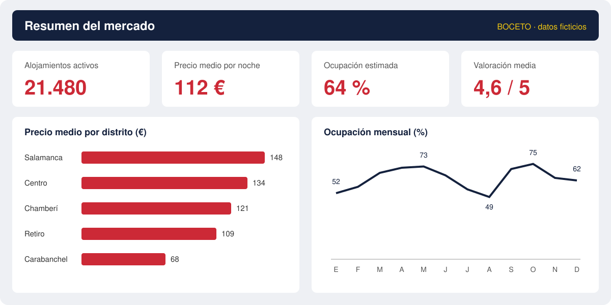

Precios
¿Qué distritos tienen los precios más altos?
Portfolio · Análisis de datos
Un proyecto de principio a fin que arranca en SQL y termina en Power BI.
Ver el proceso Código en GitHub
Una gestora ficticia de alojamientos turísticos, Llave Maestra, quiere invertir en Madrid. Antes de comprar o alquilar necesita saber dónde, qué tipo de alojamiento y a qué precio publicar.
¿Qué distritos tienen los precios más altos?
¿Cómo cambia la ocupación estimada a lo largo del año?
¿Qué tipo de alojamiento genera más ingresos estimados?
¿Influyen las puntuaciones en el precio?
¿Cuánto pesan quienes gestionan varias propiedades?
Fuente prevista: datos abiertos de Inside Airbnb.
Carga de los CSV en tablas staging de SQL Server.
Tipos de datos, nulos, duplicados y valores atípicos.
Consultas con joins, CTEs y funciones de ventana.
Vistas organizadas en un modelo estrella.
Medidas DAX y dashboard interactivo en Power BI.
-- Ranking de distritos por precio medio
SELECT
district,
COUNT(*) AS total_listings,
AVG(price) AS avg_price,
RANK() OVER (ORDER BY AVG(price) DESC) AS price_rank
FROM clean.listings
WHERE price > 0
GROUP BY district;Una tabla de hechos con la disponibilidad y el precio diario, rodeada de cuatro dimensiones.
listing_key
room_type
accommodates
date_key
full_date
month_name
listing_key
date_key
host_key
neighbourhood_key
price
is_available
host_key
host_name
is_superhost
neighbourhood_key
neighbourhood
district
